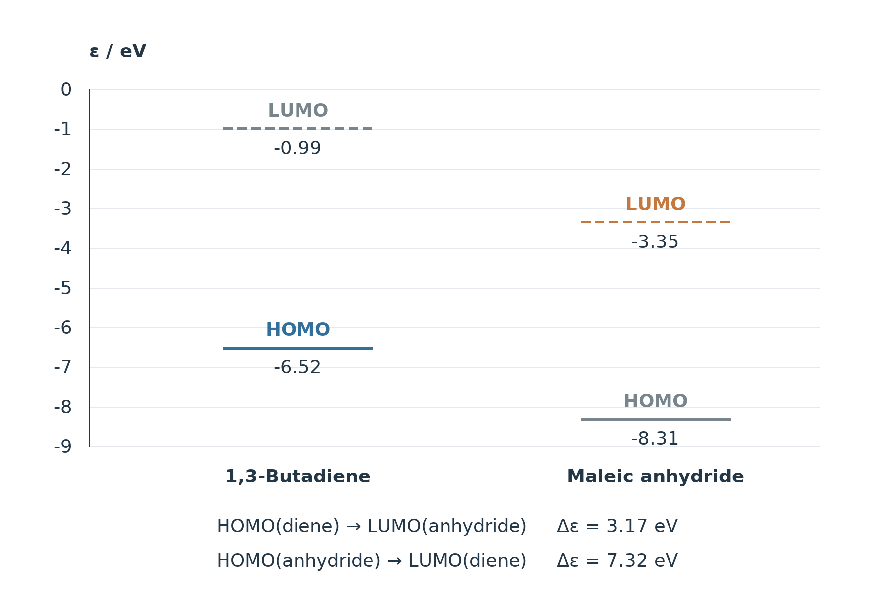
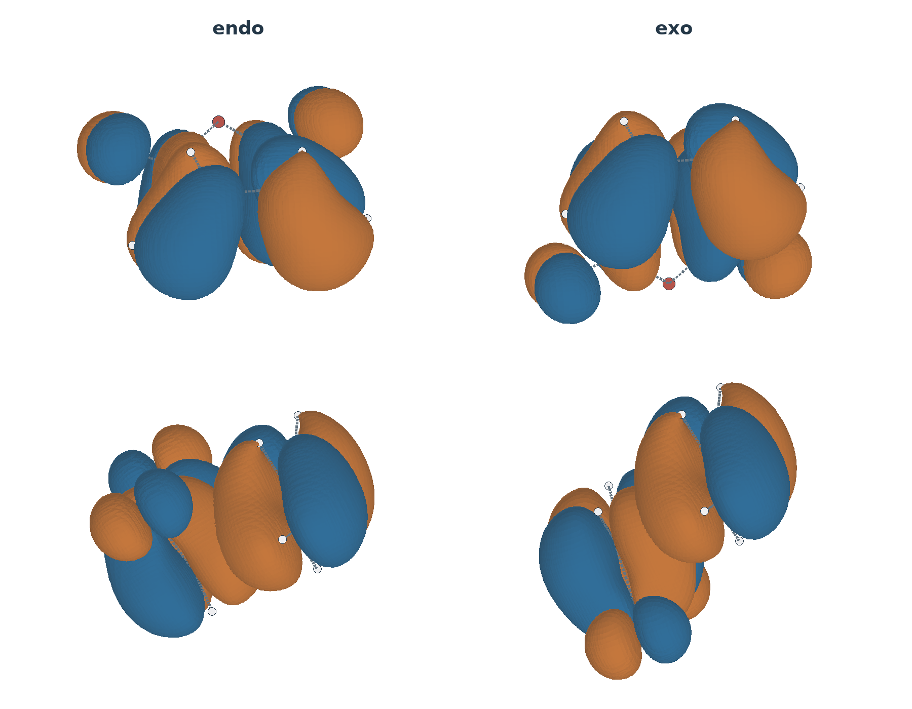
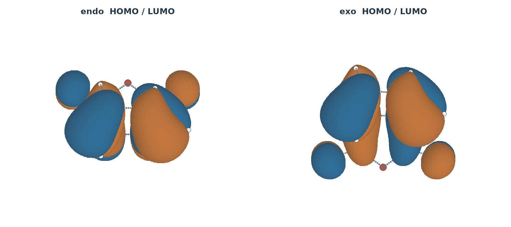
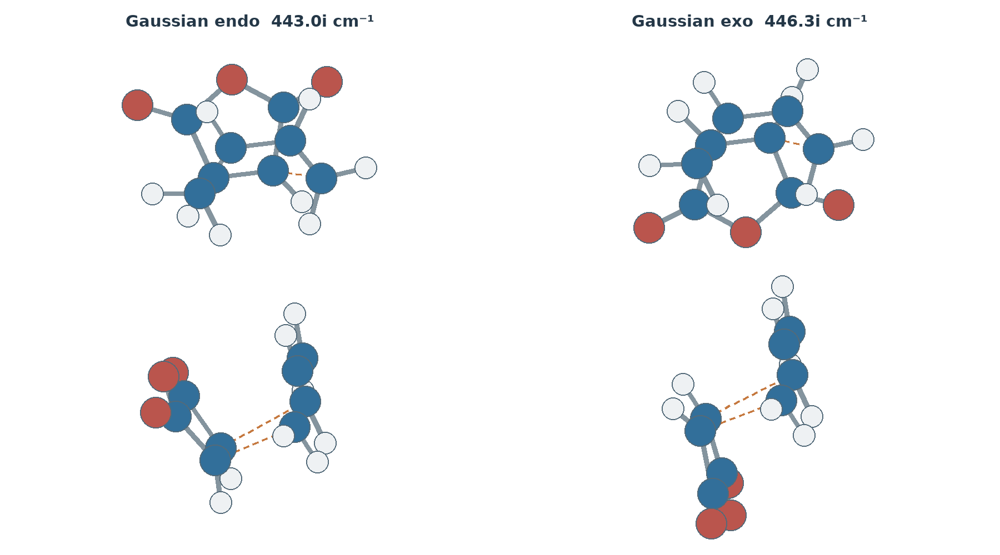
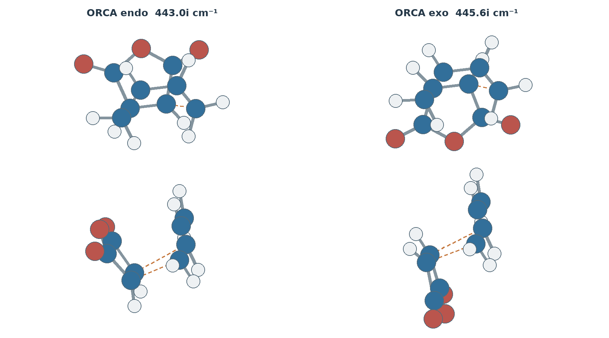
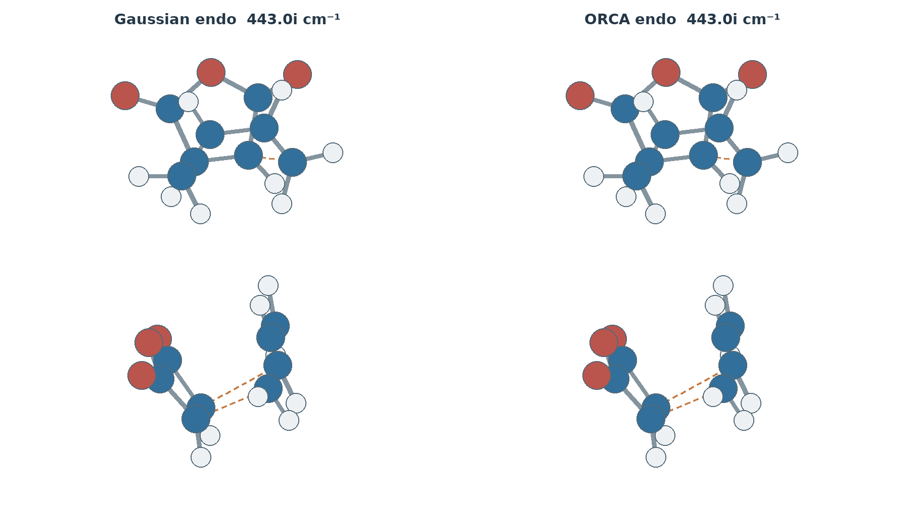
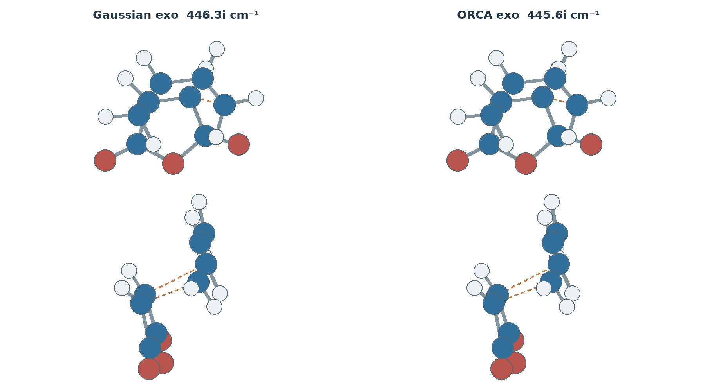

两种朝向共用同一组孤立分子能级。正常电子需求组合能隙 3.17 eV，反向组合 7.32 eV；能隙不是活化能。
轨道来自本次孤立反应物 ORCA 波函数，等值面 ±0.03 bohr−3/2，仅正旋转和平移至各 TS 的接近朝向。蓝、橙为相反相位；exo 的 LUMO 整体换号用于统一比较。旋转动画只改变视角。


以下虚频动画来自各自最终 Hessian 的真实模式。上、下为正视和侧视，统一最大原子显示位移 0.22 Å、相位及播放速度；振幅仅供观察，不代表真实动力学或 IRC。



